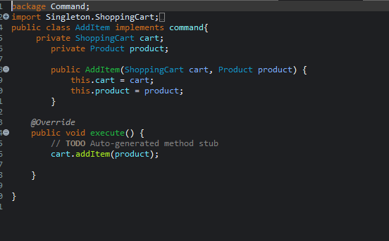

SocierMart - Inventory & Shopping Cart System
Selamat datang di Dokumentasi Framework Layer Architecture untuk SocierMart
SocierMart adalah aplikasi console berbasis Java yang dirancang untuk mengelola stok barang dan transaksi pembelian secara interaktif. Sistem ini dikembangkan sebagai solusi untuk permasalahan manajemen inventori dan transaksi sederhana pada toko atau e-commerce skala kecil-menengah. Aplikasi ini menerapkan arsitektur berlapis dengan berbagai design pattern untuk mencapai kode yang lebih modular, mudah dipelihara, dan scalable.
Fitur Utama: Manajemen katalog produk, keranjang belanja interaktif, sistem pembayaran, validasi stok real-time, dan arsitektur yang mendukung ekstensi fitur di masa depan.
Design Patterns Implementation
Facade Pattern
Facade Pattern digunakan untuk menyederhanakan interaksi antara UI (Main.java) dengan subsistem yang kompleks. Dengan satu interface utama (ShoppingFacade), seluruh operasi bisnis dapat dipanggil dari satu titik.
Singleton Pattern
Singleton Pattern memastikan hanya ada satu instance dari keranjang belanja (ShoppingCart) selama satu sesi aplikasi, menjamin konsistensi data.
Strategy Pattern
Strategy Pattern digunakan untuk memungkinkan sistem memilih strategi perhitungan harga atau diskon yang berbeda-beda secara dinamis.
Command Pattern
Command Pattern mengenkapsulasi aksi seperti tambah/hapus barang sebagai objek perintah yang dapat dieksekusi, dibatalkan, atau diulang.
State Pattern mengelola status dari keranjang belanja, misal status "kosong", "diisi", atau "checkout", memisahkan logika perubahan status dan transisi.
Application Workflow

Alur Kerja Aplikasi SocierMart. Aplikasi ini menyediakan menu interaktif dengan 9 opsi utama: menambah/hapus barang dari keranjang, mengelola stok produk, melihat katalog, membuat pesanan, memilih metode pembayaran, dan melakukan pembayaran. Setiap operasi di-handle melalui ShoppingFacade yang mengkoordinasikan berbagai service.
Interface console yang user-friendly memungkinkan pengguna untuk berinteraksi dengan sistem inventory dan shopping cart secara efisien.
Why Design Patterns Matter
The Problem
Mengapa aplikasi e-commerce membutuhkan design patterns? Dalam pengembangan aplikasi skala besar, sering kali kita menghadapi kompleksitas yang tinggi. Tanpa pola desain yang tepat, kode menjadi sulit dipelihara, sulit dikembangkan, dan rentan terhadap bug. Coupling yang tinggi antara komponen membuat perubahan kecil dapat memengaruhi seluruh sistem.
Pada aplikasi seperti SocierMart, kita perlu menangani berbagai aspek: manajemen inventori, keranjang belanja, proses pembayaran, dan validasi stok. Tanpa arsitektur yang baik, aplikasi akan menjadi monolithic dan sulit untuk di-scale atau di-modifikasi.
The Solution
Design patterns memberikan solusi terbukti untuk masalah umum dalam pengembangan software. Dengan menerapkan Facade, Singleton, Strategy, Command, dan State patterns, SocierMart menjadi lebih modular, maintainable, dan extensible. Setiap pattern memecahkan masalah spesifik sambil menjaga konsistensi arsitektur keseluruhan.
Hasilnya adalah aplikasi yang mudah dikembangkan, diuji, dan dipelihara, dengan kode yang bersih dan terstruktur.
Facade Pattern Implementation
Facade Pattern sebagai jembatan antara UI dan subsistem. ShoppingFacade bertindak sebagai interface tunggal yang menyederhanakan interaksi kompleks antara Main.java dengan berbagai service (Service, ServicePesan, ServicePembayaran). Dengan facade ini, kode di layer presentasi menjadi lebih bersih dan mudah dipahami.
Facade mengurangi tight coupling dan memudahkan pengembangan fitur baru tanpa mengubah kode UI yang sudah ada.
Kode ShoppingFacade.java
public class ShoppingFacade {
private Service service;
private ServicePesan pesanan;
private ServicePembayaran bayar;
private Map productCatalog;
private Map cart;
public ShoppingFacade() {
productCatalog = new HashMap<>();
cart = new HashMap<>();
service = new Service(cart, productCatalog);
pesanan = new ServicePesan(cart);
bayar = new ServicePembayaran();
}
public void addProductToCatalogAndCart(Product product) {
try {
int idKey = Integer.parseInt(product.getId());
productCatalog.put(idKey, product);
addToCart(idKey);
System.out.println("Produk " + product.getName() + " berhasil ditambahkan ke katalog dan keranjang.");
} catch (NumberFormatException e) {
System.out.println("ID produk harus berupa angka.");
}
}
public Collection getCart() {
return service.getCart().values();
}
public void addToCart(int productId) {
service.addToCart(productId);
}
public void removeFromCart(int productId) {
service.removeFromCart(productId);
}
public void placeOrder() {
pesanan.placeOrder();
}
public void selectPaymentMethod(String method) {
bayar.selectPaymentMethod(method);
}
public void pay() {
double total = pesanan.getTotal();
if (total > 0) {
bayar.processPayment(total);
} else {
System.out.println("Tidak ada pembayaran karena keranjang kosong.");
}
}
} Singleton Pattern untuk ShoppingCart
Key Features
Singleton Pattern memastikan hanya ada satu instance keranjang belanja selama aplikasi berjalan. Konstruktor private dan akses melalui getInstance() menjamin konsistensi data. Thread-safe implementation dengan double-checked locking mencegah race conditions.
Pattern ini menghindari duplikasi data keranjang yang bisa menyebabkan inkonsistensi transaksi, terutama dalam environment multi-threaded.
Technical Implementation

Berikut adalah implementasi lengkap dari berbagai design patterns dalam SocierMart. Kode ditulis dalam Java dengan struktur package yang terorganisir. Setiap pattern diimplementasikan dengan mengikuti best practices untuk memastikan maintainability dan extensibility.
Source code tersedia di repository GitHub dengan dokumentasi lengkap untuk setiap kelas dan method.
Project Structure
Struktur project SocierMart mengikuti arsitektur layered dengan pemisahan yang jelas antara presentation, business logic, dan data access layer. Package-package terorganisir berdasarkan fungsionalitas: Command untuk command pattern, Model untuk data entities, Singleton untuk shopping cart, State untuk state management, Strategy untuk discount strategies, dan facade untuk service layer.
Arsitektur ini memudahkan development, testing, dan maintenance aplikasi.
Technologies & Architecture Benefits
Technology Stack
Java SE 21: Bahasa pemrograman utama dengan fitur modern untuk development yang efisien.
Object-Oriented Design: Paradigma OOP dengan encapsulation, inheritance, dan polymorphism.
Design Patterns: Facade, Singleton, Strategy, Command, dan State patterns untuk arsitektur yang robust.
Layered Architecture: Pemisahan yang jelas antara presentation, business logic, dan data access layer.
Benefits: Modularitas tinggi, maintainability yang baik, scalability untuk pertumbuhan future, testability yang mudah, dan reusability komponen.
Akhir Kata
Bisa dibilang proyek SocierMart ini berhasil mengimplementasikan berbagai design patterns dalam Java dengan arsitektur yang terstruktur dan maintainable. Dengan menerapkan Facade, Singleton, Strategy, Command, dan State patterns, aplikasi menjadi lebih modular dan mudah dikembangkan. Setiap pattern memecahkan masalah spesifik dalam pengelolaan inventory dan shopping cart system.
Proyek ini menunjukkan bagaimana design patterns dapat meningkatkan kualitas kode dan memudahkan maintenance aplikasi skala enterprise. Source code lengkap tersedia untuk referensi dan pengembangan lebih lanjut.